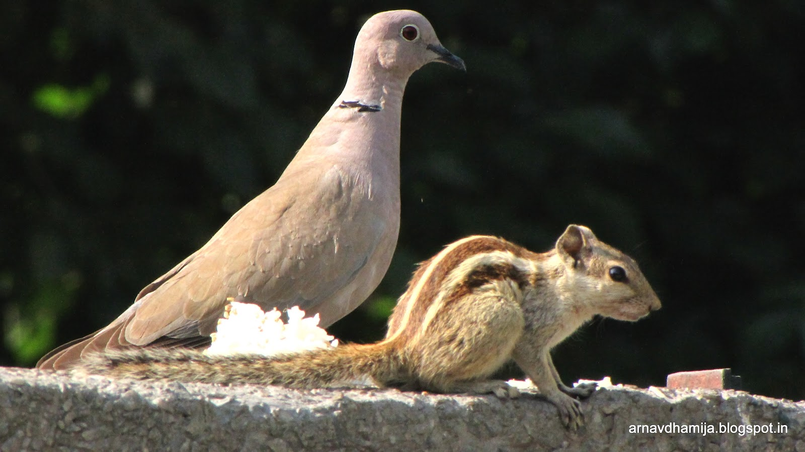
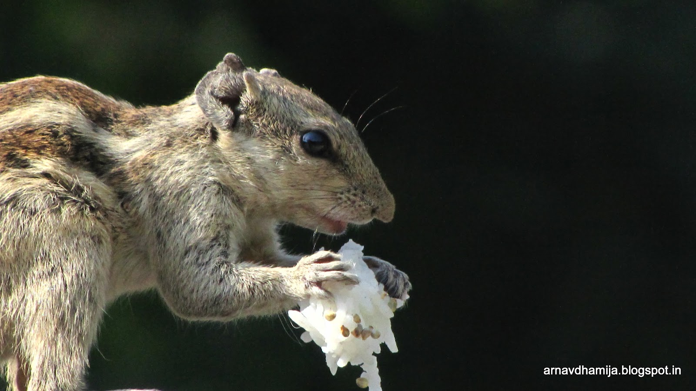
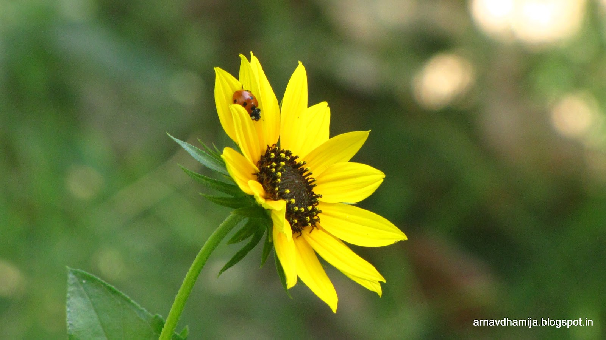
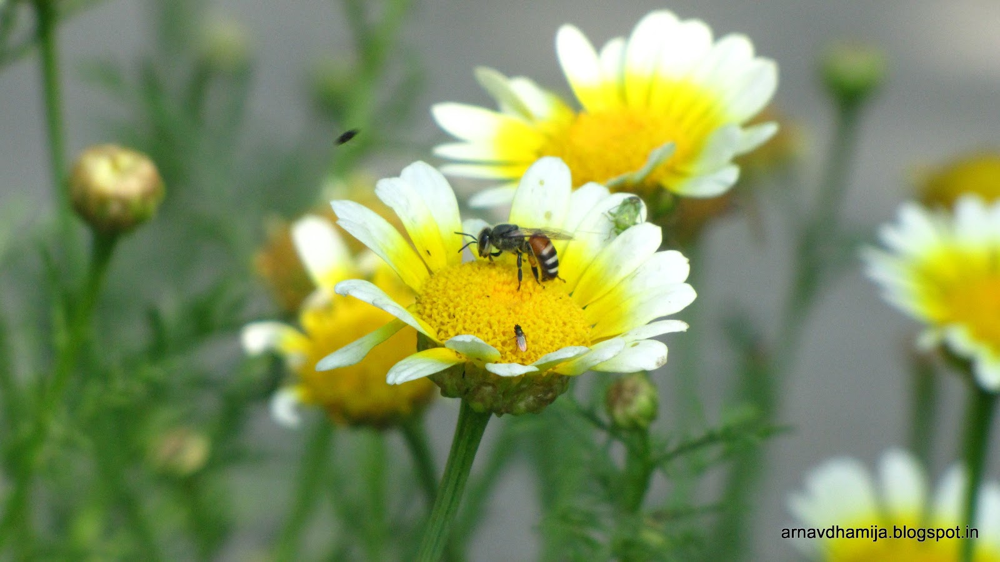
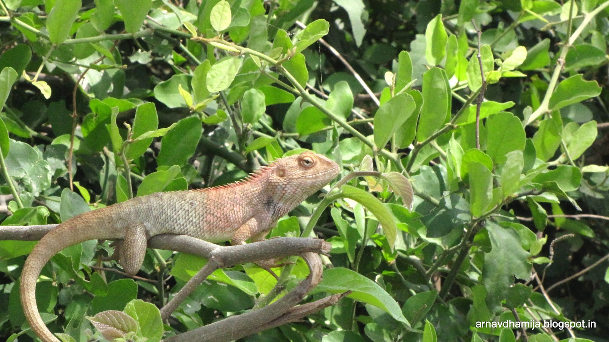
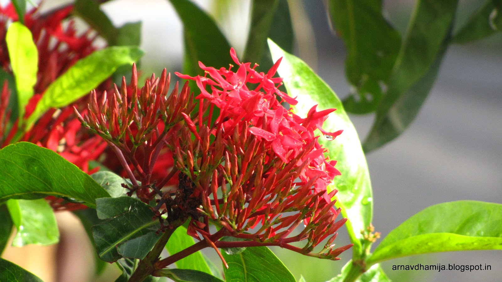
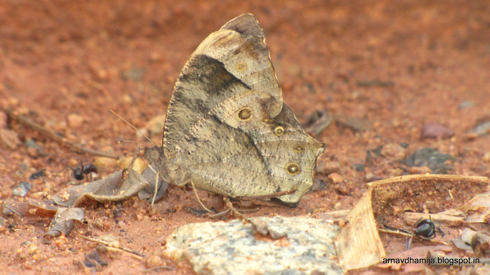
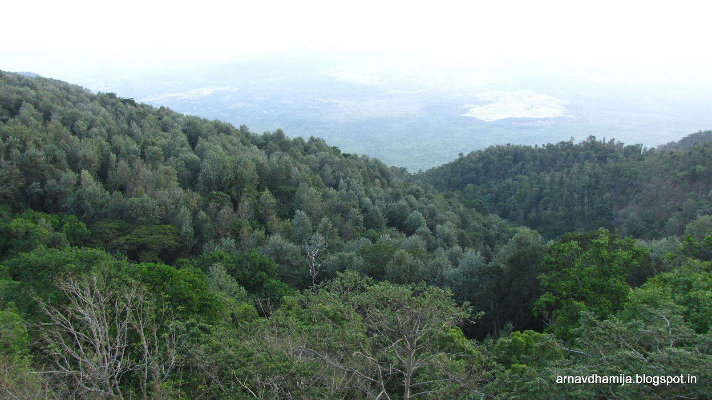
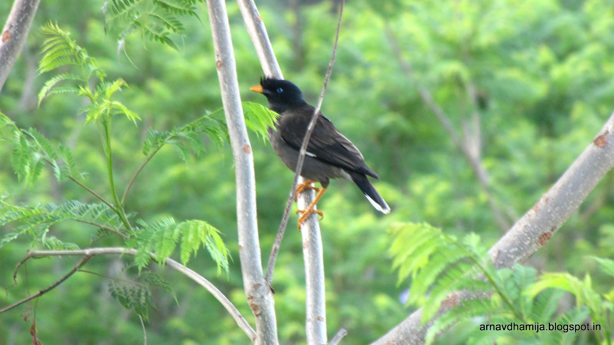
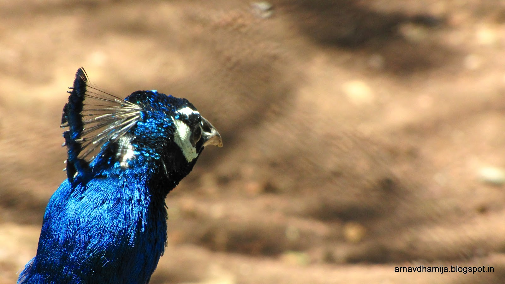

This is probably the shortest duration between two meaningful posts on this blog: just eight days! Today also represents the 1st anniversary of this blog, and hence, I present my new photography album.
Most of you would have already seen Volume 2 and Volume 1, so you probably have an idea of my photography skills. I can only say that my skills have improved since then, as you will see in these photos.
All of these photos were shot in either Aperture Priority (Av) or Shutter Speed Priority (Tv) modes, a step forward from shooting in Program (P) mode. I like exercising full control over the camera, though the camera does a better job than me in choosing shutter speeds for apertures, so Av is the mode of choice.
Technical chatter aside; the photos (click to enlarge):

Let's start off with this. A rare shot with two animals. I can't offer any opinion as to why the squirrel didn't run away from there or why the bird landed there in the first place, but using a wide aperture and high zoom did wonders here.

Another squirrel? Well, actually it's the same one as in the previous picture. I'm at the risk of repeating photos over here, but this shot was way too good to pass up. The dark area which you see to the right of the image actually gives this photo a subtle effect and the squirrel's pose is fantastic. Using a digital camera gave me a wide choice of focal lengths without much adjustment. This one is 929 mm equivalent on a 35 mm film. Used f-stop 5.7 here, because wider apertures are beyond the camera's potential at these focal lengths.

Pretty nice shot here as well. It looks like a macro shot, but this one was shot from afar. The sunflower looks great here, and the tiny ladybug on the petals is the icing on the cake (or should I say flower?). The background was perfectly suited for this shot, and gives a nice empty space for this photo.

I won't lie to you by saying that this picture was taken at a different location from the previous one. I like the bee's placement in the flower and the flower itself. The flies and the varieties of insects that adorn the flower also look good over here. The background is one of my favourite parts of this photo, with details blurred to put emphasis on the main flower, but visible at the same time. It's a hard balance to maintain, but I'm glad that it worked over here.

Nothing special about the photography techniques over here, but photographing another creature, and a reptile at that was too good to pass up.

I suppose the colour over here is the main part of the photo. Clarity and contrast are also impressive. The flower itself looks exotic enough, though I have no idea what it is. Flowers are probably the best subjects in photography. They are quite beautiful, move very little and you can try a hundred different exposures to get the right shot.

While I'll be mean to call this an ugly butterfly (I'm sure it's not a moth!), I think it looks magnificent over here. Although eye-pleasing colours are practically non-existent in this photo, you should look at the contrast of the ground to the insect. It looks pretty good, and the other insects around the butterfly provide a level of detail, without which, this photo would look much plainer.

Probably one of the best shots I took on that day. The coconut as a subject may make you raise eyebrows, but it's totally unlike anything else I've shot. The focusing was perfect here, giving the photo a very small depth of field. Less can be more and this shot exemplifies it.

You might've seen that I've only done close-up shots. This is one of the very few landscape shots I've taken. Excellent scenery and I really don't have much more to say about this.

The mynah had a nice stance and perching position for this. The background is suitably blurred over here and the foreground falls into focus nicely. The background is great for this and the bird's details are captured with some success.

It might look odd to photograph only the head of a peacock without its resplendent body. But the head itself actually has fantastic detail. The blue colour stands out superbly and there is a generous amount of empty space in the photo which is essential for greater emphasis on the bird. An unorthodox, but great shot.
That's it folks! (I have no idea why I quoted that)
Comment, criticize, and praise at your own will.
Go Top